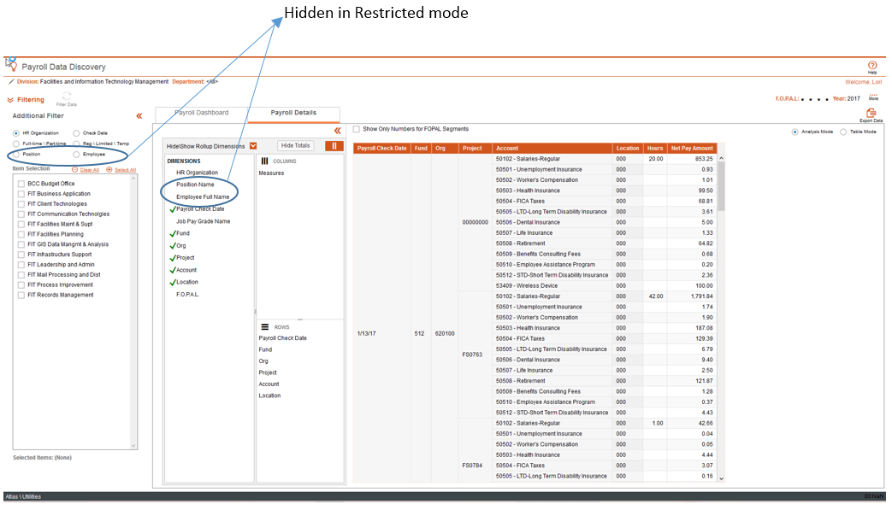
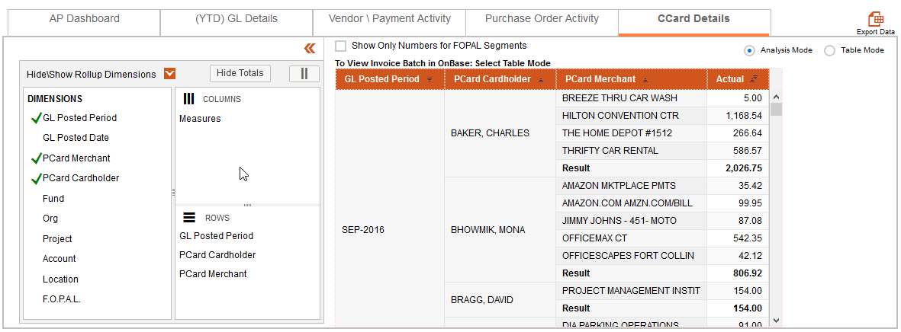
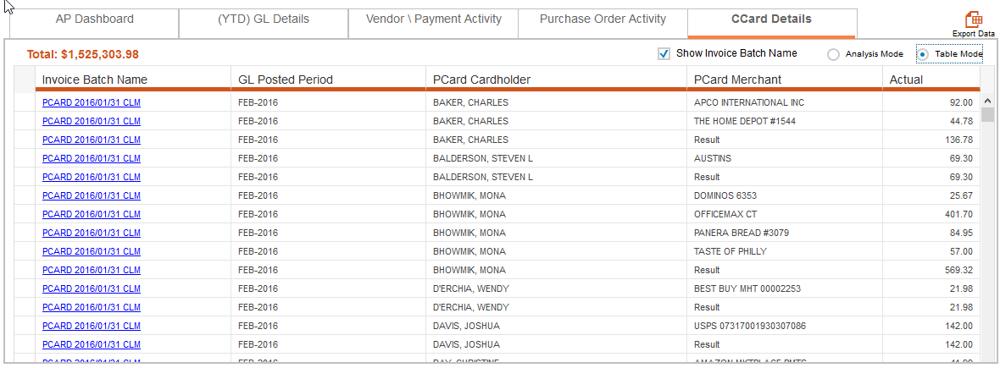

Read on for details based on each type of Data Discovery
Those without Payroll Representative or Payroll Administrative rights can now view Payroll Data Discovery in "Restricted" mode.
Restricted mode simply removes the ability to filter or view salary data by employee and position.
Below is a screen shot of Payroll Data Discovery that shows the features available to Payroll Representatives (when viewing their own Division or Department) and Payroll Administrators that will not available for general use.

If you have any questions regarding access to Payroll Data Discovery please contact....??
Users now can browse through Commercial Card Transactions based on their own Filter selections. Credit Card Transaction information is available in the form of an Analysis Component as well as a Table Component.
Analysis Mode Screen Shot:
By default, the Crosstab is setup to show Actuals by GL Posted Period. This is easily modified using the Analysis Component.

Table Mode Screen Shot:
Table Mode will display the dimensions selected in Analysis Mode but add an optional Invoice Batch Name column so that you can quickly access the OnBase Image of the Invoice. Table Mode contains the Table Component and offers some valuable features to explore your data through additional filtering and sorting. Please see Table Component documentation for a full list of features.

If you are a member of one of the Divisions listed below, Data Discovery will now default the filter criteria to your Department:
This has been a long awaited feature for these divisions and will hopefully help save a few steps when accessing all of the Data Discovery products.
NOTE: In Payroll Data Discovery, employee and position details are only available to Payroll Reps in these Divisions for their respective Departments.
Analysis Component
Table Component
Payroll Data Discovery
AP Data Discovery
Created with the Personal Edition of HelpNDoc: Create cross-platform Qt Help files